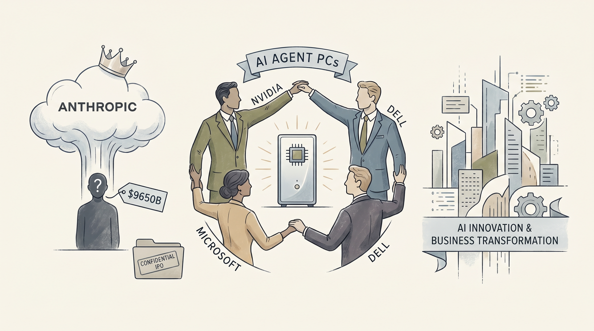

Anthropic完成65亿美元H轮融资，估值达9650亿美元，超越OpenAI成为全球估值最高的AI创业公司。
两克伴AIGC日报
2026-06-02 星期二

本期关注：Anthropic估值达9650亿美元，超越OpenAI成为最具价值AI初创公司 - OpenTools、英伟达携手微软、戴尔和惠普推出AI智能体电脑，进军2000亿美元CPU市场、Anthropic秘密提交美国股市首次公开募股申请 - 《卫报》、Show HN：使用语义路由将 LLM 推理 GPU 调用减少 94%
📰 行业动态
NVIDIA发布新型PC CPU "RTX Spark"，联合微软、戴尔、惠普推出AI PC，进军2000亿美元CPU市场。
Anthropic已向美国证券交易委员会秘密提交IPO申请，可能于今年完成上市。
🔥 今日焦点
又有人在GPU优化上整活了。这次是一位开发者通过语义路由（semantic routing）技术，把LLM推理时的GPU调用次数直接砍掉了94%——也就是说，原本需要调用10次GPU的任务，现在只需要不到1次。对于那些在本地跑模型、或者API调用成本敏感的用户来说，这个方向值得关注。目前这个方案已经在Ubuntu环境完成了验证，感兴趣的可以跑跑脚本试试。当然，具体能在哪些场景复用这个思路、又能省多少银子，还得看实际跑出来的效果。GPU效率这个赛道最近真是越来越卷了。
---
Hacker News上冒出来一个挺有意思的项目——一个能稳定跑10年的MQTT Broker。开发者说他设计的目标是装上墙、插上电、然后忘掉它10年：不用遥测上报、不用强制更新、也不用每月去维护。成本控制在10-30美元的芯片上就能跑。这个思路在"万物联网"的时代其实挺反主流的——大部分IoT设备都默认需要联网更新、收集数据，而这个项目选择彻底离线化。对于那些需要在恶劣环境、偏远地区或者合规要求极高（不能联网）的场景部署传感器网络的用户来说，这是一个值得收藏的工具。
📚 深度长文
这篇文章详细记录了 Google 团队如何使用 Gemini 大模型来规划和执行 Google I/O 2026 大会的完整流程。从主题演讲内容的生成、演示 Demo 的设计，到技术文档的撰写、代码片段的校验，Gemini 几乎渗透到了大会准备的每一个环节。文章特别值得关注的是，它首次公开了 Google 内部如何将大模型作为“数字协作伙伴”嵌入真实工程流程——不是简单的问答，而是让模型参与决策、校验逻辑、甚至帮忙debug。虽然这是 Google 的自家宣传，但其中透露的“Human-Agent协作范式”细节，对于想了解大厂如何把 LLM 真正用进产品研发生命周期的读者，很有参考价值。
---
这篇报道聚焦中国在脑机接口（BCI）领域的最新进展，特别是全球首个获批的侵入式脑芯片的临床进展与应用前景。文章采访了多位神经科学研究者和中国产业界人士，揭示了中国在该领域“政府主导、资本加速”的独特路径，以及与美国的竞争态势。虽然脑机接口严格来说不完全属于AI Agent范畴，但它与“AI+人机交互”的终极形态密切相关——当语言模型能够直接与神经信号对接，当Agent不再只是处理文本而是能读取生物信号，AI Agent的边界将被重新定义。对于关心AI未来走向、尤其是人机融合趋势的读者，这是一篇不可错过的深度报道。
🐦 Ta们说
> "Anthropic has confidentially submitted a draft S-1 registration statement to the Securities and Exchange Commission.
Pending completion of SEC review, this gives us the option to pursue an initial public offering.
> "I would say that it is absurd to say that “AI belongs to the people”, when so many companies have worked so hard to develop it, but it is also absurd that Generative AI has basically been built on the mass theft of intellectual property.
So maybe @sensanders has a point?"
> "VenCap CIO David Clark says top 1% venture exits are 10x-ing:
"We always thought that the largest companies were going to continue to be an order of magnitude larger than we'd seen in prior cycles. And if anything, that's accelerating."
🛠️ 产品推荐
这是一门聚焦Claude Opus 4.8高级应用的技术大师课程，专注于两个核心主题：Effort Control（努力控制）和 Dynamic Workflows（动态工作流）。
课程深入讲解如何精准调控AI模型的工作投入程度，帮助开发者根据任务复杂度动态调整AI的计算资源消耗。学员将学习构建灵活的工作流架构，实现AI任务的自动化编排与智能调度，从而在保持输出质量的同时优化成本效率。
这是一款专注于生成式引擎优化（GEO）的网站审计工具，旨在帮助站点在AI搜索时代抢占先机。随着ChatGPT、Perplexity等AI搜索引擎的崛起，传统SEO已无法满足新需求，GEO正成为下一个关键战场。
产品核心功能是自动化检测网站在20多项GEO指标上的表现，包括内容结构、语义相关性、上下文可读性等关键维度。独特之处在于提供原创的GEO Rank™评分体系——类似于传统的核心网页指标（CWV），以直观的量化分数呈现网站对AI搜索的适配程度，让优化效果一目了然。